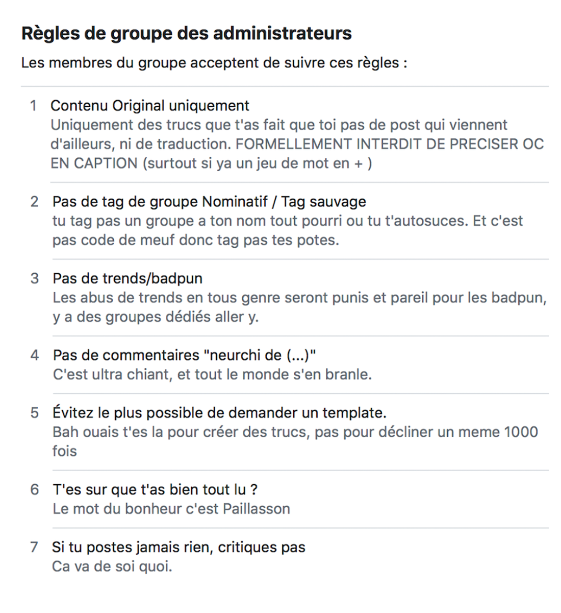
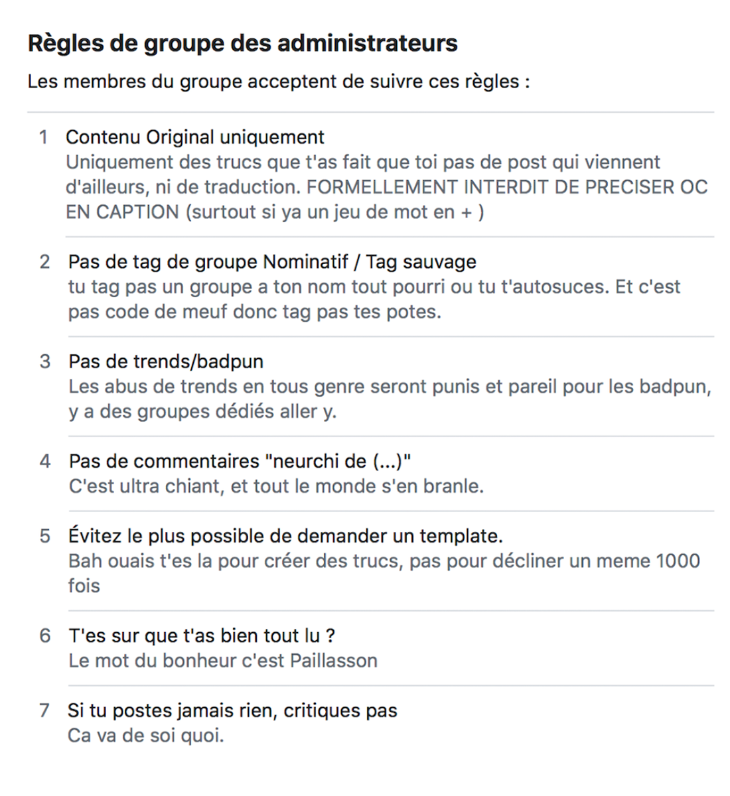

Un contenu élitiste, que seul un public initié peut décoder / déchiffrer
On peut citer Clément Renaud qui se propose de définir ce qu’est un meme et de montrer comment il s’inscrit dans une communauté numérique :
« Au-delà d’un objet numérique réifiant les actions et la culture, le meme peut être défini comme une série d’actes d’énonciations contribuant à la création et à la reconnaissance mutuelle d’individus comme groupe. Le meme, en effet, ne peut être simplement copié mais a besoin d’être acté pour exister. Les partages, commentaires, réappropriations puis transformations des mêmes Internet peuvent ainsi être compris comme des actes d’énonciation, comme les répétitions et redites d’une foule d’individus et de groupes qui habitent la Toile. »
La barrière « légale » d’adhésion et de modération des communautés
Il est fascinant de constater que les groupes de neurchi et les communautés de meme se caractérisent presque toutes par un système d’adhésion sous forme de questions et de recommandations faites au « candidat », l’utilisateur qui souhaite intégrer le groupe.
En effet, pour devenir membre, il faut au préalable lire un ensemble de règles du groupe, et adhérer théoriquement à une « bonne conduite » au sein de la communauté numérique. Les règles sont relativement similaires selon les groupes et consistent souvent à proposer dans les publications des contenus originaux uniquement, à éviter des propos dirimants, violents, à ne pas faire de de tag sauvage, etc.
Ces règles peuvent être écrites sous un ton décalé, parfois drôle à travers un esprit autoritaire, menaçant, ou moqueur. Cet « humour » utilisé est en fait ce que l’on pourrait considérer comme un premier filtre : on souhaite vérifier que l’utilisateur qui s’apprête à rentrer dans la communauté est dans le « même esprit », joueur, et potentiel bon public des publications du groupe, quasiment toujours humoristiques, voire cyniques. Les règles sont la plupart du temps accompagnées d’un certain nombre de questions auxquelles l’utilisateur doit soumettre sa réponse- Toujours dans cette idée d’avoir un public « approprié » pour la page, le ton est humoristique et peut demander à l’utilisateur de raconter une anecdote amusante, un mot descriptif, etc.
La modération fluctue en fonction de la taille et de l’importance des groupes mais tout contenu jugé « hors-cadre », que cela soit parce qu’il est nuisible ou parce qu’il ne correspond pas à « l’esprit » de la page est susceptible d’être enlevé, et l’utilisateur exclut.Il y a donc quasiment un aspect sélectif sur ces groupes qui cherchent à développer leur communauté et audience, certes, mais pas forcément avec tout le monde.
 

Illustrations : règles et formulaire d'adhésion du groupe Teurcréa
Le jargon de la communauté des "Neurchis" ...
Pour mieux comprendre le phénomène linguistique autour des memes, nous avons pu étudier l’œuvre de l’américain Harold Schiffman, qui s’intéresse au lien entre langage et sociologie, notamment dans son ouvrage « Linguistic culture and language policy ». L’auteur met en évidence l’aspect officieux, induit, implicite des « codes » de langages dans les différentes sociétés. Il existe en fait des règles communes de grammaire, de syntaxe et d’expression, mais aussi tout un panel d’usages qui ne sont pas enseignés en tant que tel, mais qui sont compris et acceptés par les même membres d’une communauté.
L’utilisation de ces codes peut aussi être un facteur de différenciation sociale, puisque la fréquentation d’un certain milieu est nécessaire à l’acquisition subtile de ces codes de langage. Ainsi, ceux qui parlent d’une certaine manière peuvent s’identifier et se lier pour créer une communauté. Le sociologue s’appuie sur différentes langues et sociétés pour illustrer ses propos, mais aussi sur différentes périodes historiques : il démontre que lors de guerres et de conflits d’oppression des peuples, la langue était un enjeu crucial - nombre de communautés ont vu leur langue censurée ou supprimée, dans le but de détruire la culture du peuple, mais aussi avec la conviction que l’interdiction de la langue mettrait à mal les groupes et sous-communautés existantes au sein du société- on comprend alors le pouvoir de fédération d’un langage et de ses sous-communautés.
En ce qui concerne notre sujet, on peut considérer que le fonctionnement est similaire au sein des groupes de meme : les utilisateurs partagent un langage subtil, bordé d’expressions et de manières de s’exprimer particulières - l'aspect humoristique qui définit le meme en soi renforce cette importance du code linguistique. L’utilisateur qui ne comprend pas le langage ne peut pas du tout être touché par les publications de la communauté et en est exclu. L’effet est également générationnel : le jargon de la communauté des Neurchis s’appuie énormément sur des références au thème du groupe, à la culture Internet, et le langage est en lui-même proche des jeunes générations.
... et des dialectes encore plus spécifique dans chaque groupe
Montrer qu’on va encore plus loin dans la mise à distance avec les non-initiés + Reprendre les éléments de l’exposé liés à cette partie
La sanction de la création d’un meme inapproprié, garante d’un contenu de qualité
Reprendre les éléments de l’exposé à ce sujet (Laura)
Démontrer que la maîtrise de tous ces codes est exigeante et est une condition essentielle pour qu’un membre de la communauté publie un meme accepté par tous
Si ce n’est pas le cas, alors la sanction est la non-publication de la création et peut même aller jusqu’à l’exclusion de la communauté (le ban)
Possibilité de reprendre l’exemple de Victor Bour et de la publication du meme pourri (private joke) pour illustrer ce propos
Une communauté constituée d’une population assez homogène et un effet de « club » et « d’entre-soi »
Reprendre les éléments de l’exposé à ce sujet (Laura)
Critères socio-démo/CSP partagés au sein d’une même communauté
Montrer qu’il peut y avoir une forme de consensus et qu’en cas d’éventuelles dérives, il n’y a pas réellement d’opposition
Bien dire que les communautés de Neurchi sont bienveillantes et qu’elles ont l’air préservées de cette conséquence de l’entre-soi (coucou Martin ;D), mais que cela reste une dérive possible, car c’est ce qu’on observe plus largement dans d’autres communautés d’Internet (petite ouverture)
Le rejet du « mainstream » comme mot d’ordre
Reprendre les éléments de l’exposé à ce sujet
Montrer que c’est l’ultime règle chez les Neurchi
(Je ne sais pas trop où mettre cette partie, on peut peut-être l’intégrer dans la PARTIE 2 aussi)